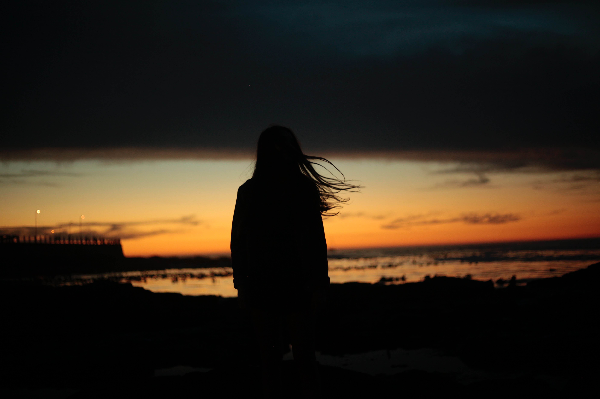

Travel Experiences
I've always wanted to travel since I was a small child. I enjoy discovering new areas and really exploring them. In the future, all I want to do is trek, climb, and discover new areas. If only it were a real profession, I'd travel and discover. Most people claim they were born with this trait, while others claim they had to discover their inner explorer.
I emerged from the womb with a trail map of the entire Appalachian Trail. Hiking amid the woods in Yosemite National Park would be my favorite trip if I had to pick one. Day excursions to the rock climbing gym, for example, are 10 times more entertaining for me than shopping. Sure, going to the beach and relaxing in a beach home is fun, but if I had my way, we'd go ocean kayaking instead. If I'm being honest, if there isn't any danger involved, I'm probably not having the best time. Many people assume I got it from growing up in a house full of boys, but when I tell them I only have two sisters, they are surprised. There's no other way to express my great desire for adventure and travel than to say that it's simply who I am.
I'm not sure when I first came into contact with my extreme explorer nature, but it was quite early on. I was climbing trees and understanding what it meant to explore even when I was 4 or 5 years old. I enjoyed it so much that I pulled my cousin along to explore with me. Even though he wasn't as enthusiastic as I was, we still enjoyed playing tackle football in the backyard. I haven't traveled much, but the time I have spent traveling has been spent exploring everything in sight. I've gone on multiple hiking trips, some just hiking and others more, but they've all been fantastic. I adore discovering new places, traveling, and learning about different cultures. Every one of these topics piques my curiosity, and I hope to be able to apply them to my future career.

Unforgettable Family Memories
To go places and do things that have never been done before – that’s what living is all about.Experiences are unforgettable events that involve each of us in an intrinsically personal way, resulting in a recollection as the hallmark of happiness. In some ways, describing a memorable experience has stuck with us since it became important to us and effective. Memorable refers to something that is easy to remember or worth remembering, especially if it is unique in some way. Memorable things include events, reviews, people, and things. The phrase is almost always used positively in all of them.
My family function provided me with additional Memorable Experiences. Every year, we all gather in a village near our hometown for deity festivals. There is a typical local house there. There may be religious celebrations as well as a dinner party that lasts all night. The following evening, the expert artists will perform a non secular drama. The drama begins around eleven p.m. and ends at 6–7 a.m. This drama attracts the attention of the elderly. We were not very enthralled as children. For me, 11 a.m. is the cutoff. After 9 p.m., my eyes will rest. I couldn't stay awake beyond 10 p.m. no matter what. My older cousin once drove us all there. Mom and aunts brought enough of goodies to last the entire night. We sat in front of Grandfather's house on a blanket stretched out.
Once we were seated, I felt drowsy. I fell asleep shortly after the drama began. I should be able to hear the music and talks because I am a light sleeper. After some time, I awoke and watched the drama for 15 minutes. I fell asleep all over again. This continued throughout the night. When I awoke at 7 a.m., I discovered that they were all still watching the drama. This was the most unforgettable experience. After a long time, my cousin's reunion became the most incredible celebration at my brother's wedding.
First Heartache Experience
Family breakups are often difficult for children. Parents can help their kids by giving them honest explanations and emotional support.
How did your father's birthday go? It all started when Facebook pleasantly informed me that it was Father's Day, and I should thank all the fathers out there for their large hearts and greater hugs. I can't attest to your large heart or even larger embraces. You've never given me a hug. I've never heard your voice before. We've only spoken once: on my 21st birthday, when you made vague allusions to my being your daughter and asked me to contact you after you left. You never said you were my father, and you vanished without a trace. My world was turned upside down when I learned about you.
My mother told me when I was five years old that my father had abandoned me before I was born. I was far too young to comprehend. I had no choice but to accept it all. But right now I have no plans in connecting with you again, you could have been a great father, we could have been a perfect family if you only had a guts to stay with my mother even in hard times.

Lyrics of my Favorite Song
The Climb
I can almost see it
That dream I'm dreaming
But, there's a voice inside my head saying
You'll never reach it
Every step I'm taking
Every move I make feels
Lost with no direction
My faith is shaking
But I, I gotta keep trying
Gotta keep my head held high
There's always gonna be another mountain
I'm always gonna wanna make it move
Always gonna be an uphill battle
Sometimes I'm gonna have to lose
Ain't about how fast I get there
Ain't about what's waiting on the other side
It's the climb
The struggles I'm facing
The chances I'm taking
Sometimes might knock me down, but
No, I'm not breaking
I may not know it
But these are the moments, that
I'm gonna remember most, yeah
Just gotta keep going
And I, I gotta be strong
Just keep pushing on, 'cause
There's always gonna be another mountain
I'm always gonna wanna make it move
Always gonna be an uphill battle
Sometimes I'm gonna have to lose
Ain't about how fast I get there
Ain't about what's waiting on the other side
It's the climb
Yeah
There's always gonna be another mountain
I'm always gonna wanna make it move
Always gonna be an uphill battle
Sometimes you're gonna have to lose
Ain't about how fast I get there
Ain't about what's waiting on the other side
It's the climb
Yeah, yeah
Keep on moving, keep climbing
Keep the faith, baby
It's all about, it's all about the climb
Keep your faith, keep your faith
Whoa
Music has an effect on the brain and causes the production of certain hormones. You can concentrate better if you listen to your favorite piece. It relieves any pain you may be experiencing and allows you to revitalize. Furthermore, listening to a song with others might help you form bonds with people, which can improve your social skills. The song “the clmb” is a tribute to the power of positive thinking, faith, and believing in one's aspirations. It depicts the beauty of believing in one's dreams and doing what it takes to achieve them.